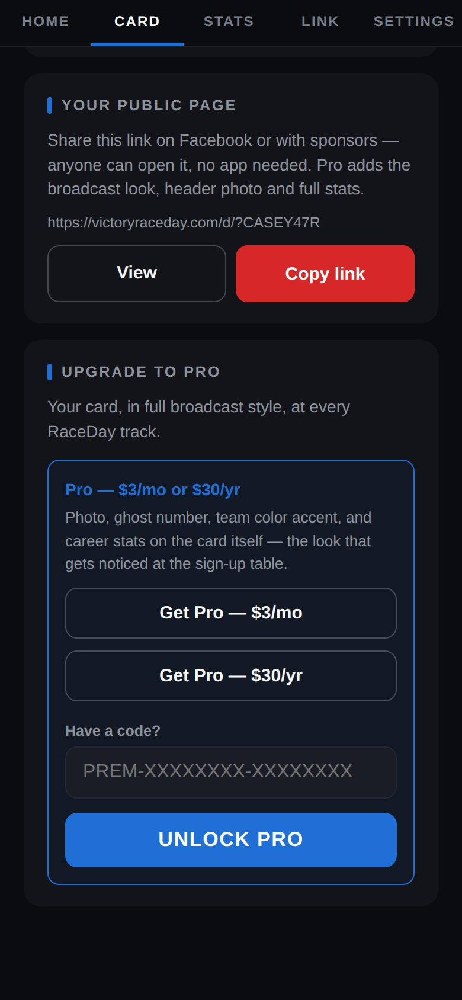

-
Share from Home
On Home, tap Share my page to send it with your phone's share menu, or View to open it.

Share my page -
Or copy the link
The Card tab has Your public page with the address — victoryraceday.com/d/?YOURCODE — plus View and Copy link.

Your public page -
What people see
Your banner, number and hometown, your latest verified result, and starts, wins, top 5s and average finish.

The public page -
Every result, plus the rest
Below that: every result with the track and date, your bio, highlights, crew and sponsors.

-
Keep it fresh
Edit your card in Settings and Save changes — the page updates by itself.
Good to know
- Your email is never on your page.
- Pro adds a header photo, three team colors, season form, milestones and points standings — see Go Pro.
Next guides
Still stuck? The Driver FAQ covers common questions, and the Field Manual walks through every Driven screen. Or just ask.
Email a question →